Conheça os personagens
Uma equipe formada por muita emoção.
Uma equipe formada por muita emoção.
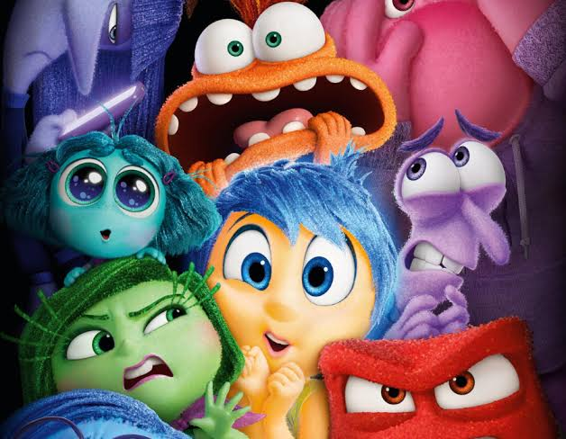
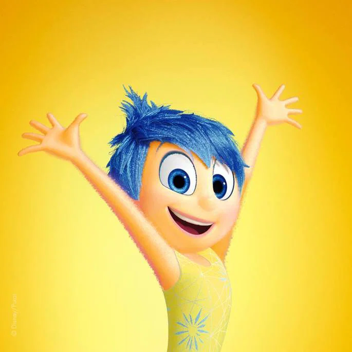
Alegria
A líder otimista do grupo. Amarela, brilhante e cheia de energia.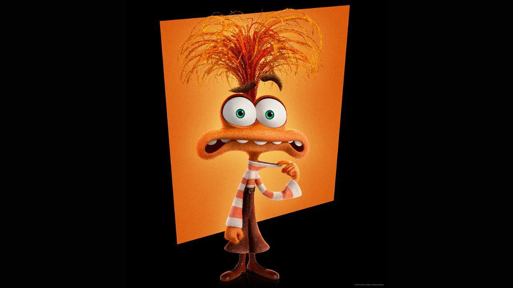
Ansiedade
Laranja e descabelada. Ela vive no futuro, antecipando todos os cenários possíveis para tentar "proteger" a Riley.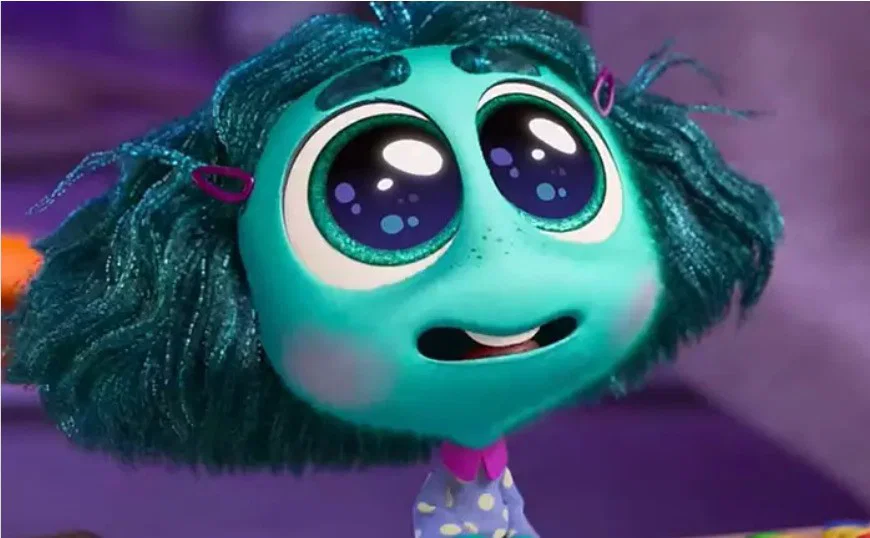
Inveja
Pequena e com os olhos enormes. Ela passa o tempo todo desejando tudo o que os outro têm.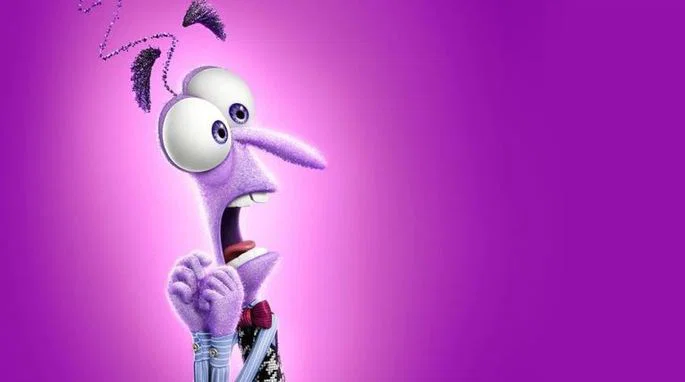
Medo
Roxo, magro e superagitado. O trabalho dele é proteger a Riley de qualquer perigo.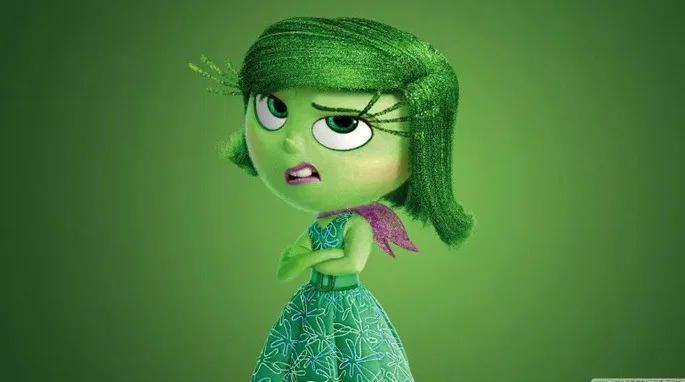
Nojinho
Verde e cheia de atittude. Ela garante que a Riley nãos seja envenenada , seja por brócolis ou por situações ruins.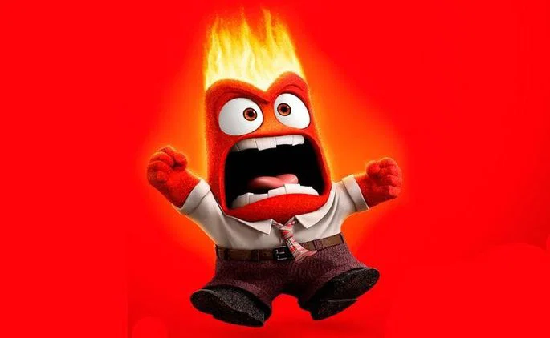
Raiva
Vermelho e nervoso. Tem pavio curto e não tolera frustrações.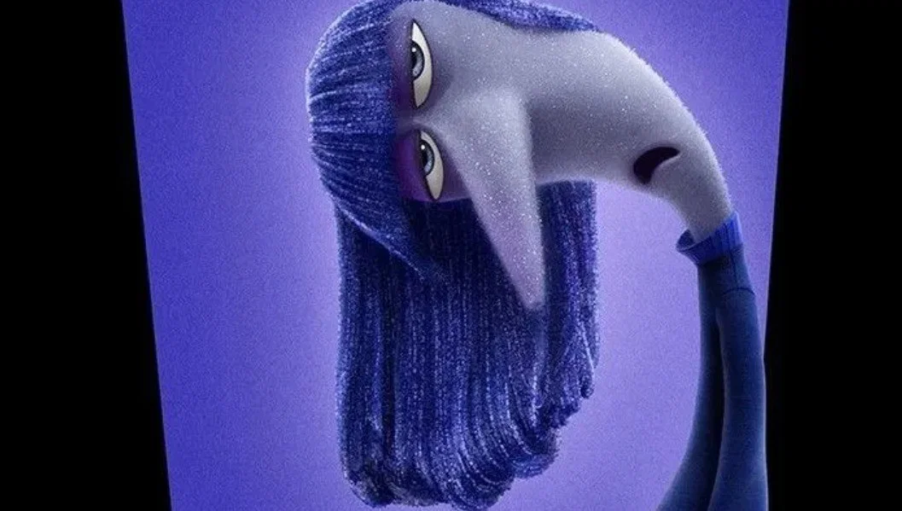
Tedio
Roxa, jogada no sofá e sem energia nenhuma. Ela controla o painel pelo próprio celular e traz aquele desinteresse típico dce adolescente.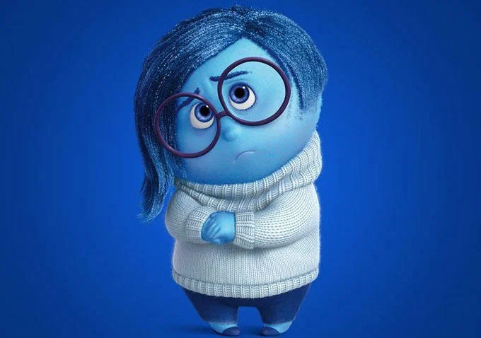
Tristeza
Azul e quieta. Ela costuma ver os problemas primero e sente uma necessidade constante de chorar, mas é essencial.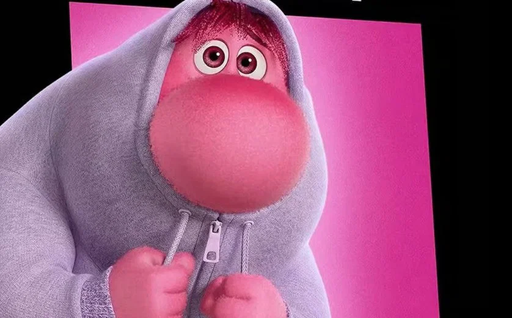
Vergonha
Um gigante rosado e tímido Ele fica vermelho facilmente e só quer passar despercebido.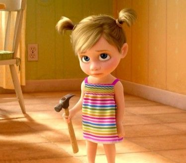
Riley
A personagem principal. Apaixonada por hóquei e aprende a lidar com mudanças do crescimento enquanto suas emoções amadurecem.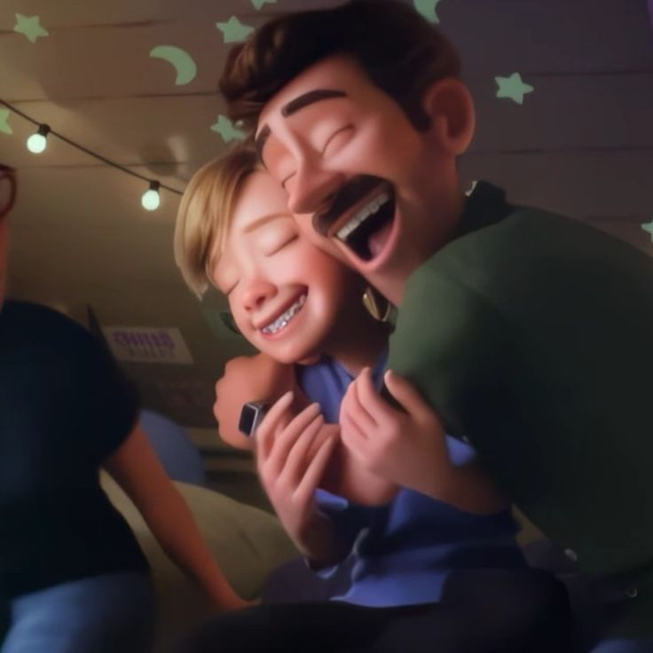
Pai da Riley
O pai de Riley. Ele é carinhoso e tenta entender as emoções da filha, mesmo quando não compreende completamente.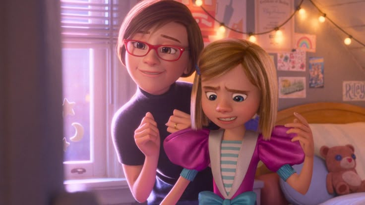
Mãe da Riley
Carinhosa e guiada pela empatia, busca manter a família conectada a acolher a filha nos momentos difíces.